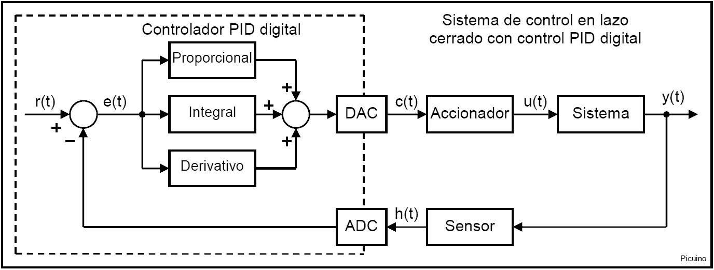
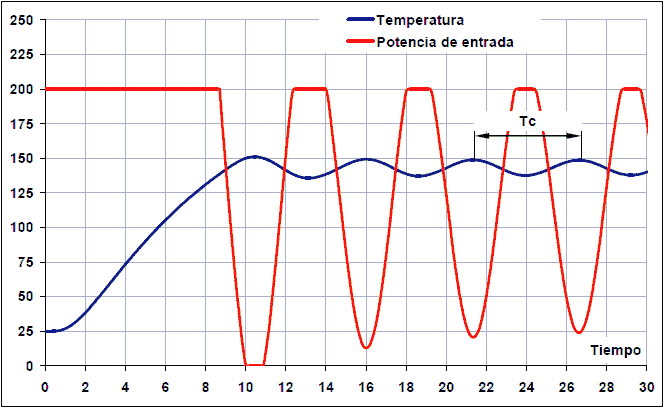
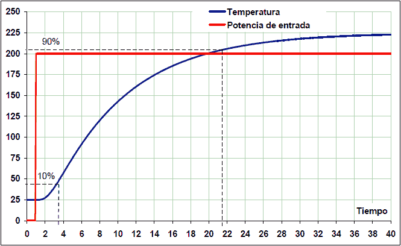
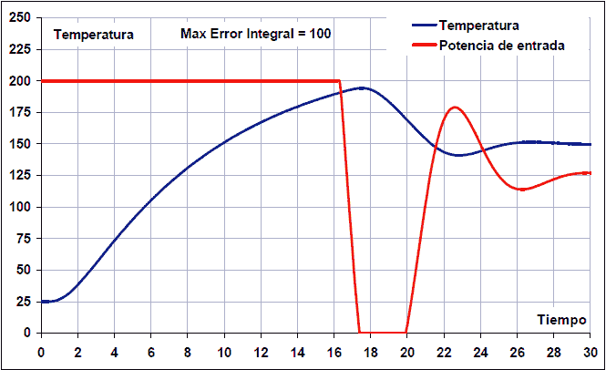
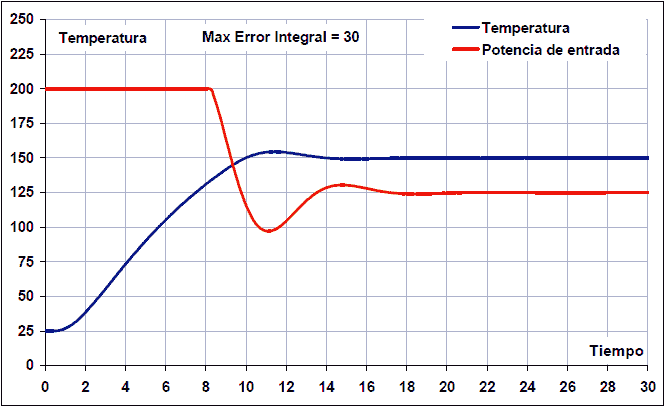
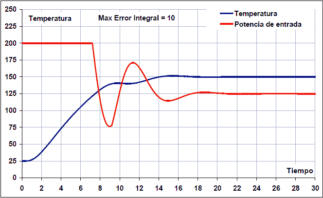
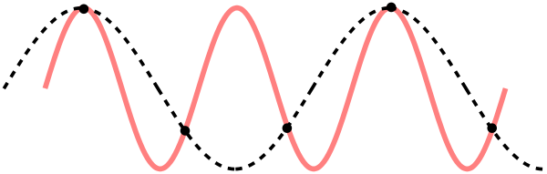
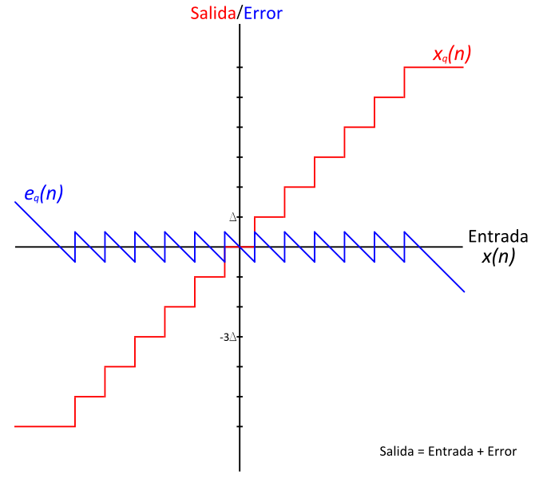

Controlador digital PID¶
Muchos controladores actuales utilizan microcontroladores digitales. En esta página se presentará la programación de un regulador PID implementado con un microcontrolador. Los reguladores digitales sustituyen varios elementos en un sistema de control tradicional por cálculos en un sistema programado. En la figura siguiente puede verse un esquema de un regulador controlado por un microcontrolador.
{kind=link}

Les funcions del microcontrolador es bloquegen al quadrat amb línies de punts.
Els blocs que serveixen de connexió entre el microcontrolador i el sistema són un `DAC (Convertidor digital a analògic) <https://es.wikipedia.org/wiki/conversor_de_se converter) <https://es.wikipedia.org/wiki/conversor_de_se_s <https://es.wikipedia.org/wiki/conversor_de_se%C3%B1al_anal%C3%B3Gica_a_digital> `__. Aquests dos blocs permeten els senyals analògics del sistema controlat a nombres digitals utilitzats pel microcontrolador i viceversa.
De vegades, els convertidors ADC i DAC es poden implementar amb un `` regulador PWM <https://es.wikipedia.org/wiki/modulaculacci%C3%B3n_por_ancho_de_pulos>`__.
Període de mostreig¶
Si bé els sistemes analògics són contínues, els sistemes digitals són discontinuos. Això significa que els seus valors s’avaluen o es canvien cada període de temps anomenat temps de mostreig. El període de mostreig defineix com es faran moltes vegades per segon les conversions analògiques del diagrama i es calcularan els paràmetres del PID. A partir d’ara, el període de mostreig estarà representat per la lletra ** t **.
La resposta del bucle tancat d’un sistema controlat per un Digital PID dependrà d’aquest període de mostreig. Si aquest temps és massa alta, l'estabilitat del sistema serà menor i el sistema pot arribar a ser inestable i no ser controlable. Un mètode per estimar el període de mostreig és calcular el període d’oscil·lació del sistema de bucle tancat amb un guany que provoca oscil·lacions. Es farà un període de mostreig menor que la desena part del temps o el període d’oscil·lació.
A l'exemple que apareix a continuació, s'ha augmentat el guany proporcional fins que es mantinguin les oscil·lacions en la resposta al pas. El període d’oscil·lació és de 5,6 segons i, per tant, el període de mostreig ha de ser inferior a 0,56 segons.
{kind=link}

Temps d’oscil·lació i període de mostreig:
TC = 26,8 - 21,2 = 5,6 segons (temps d'oscil·lació)
T <tc / 10 = 0,56 segons (període de mostreig)
Si el sistema està sobrebolit i no presenta oscil·lacions, el criteri per triar el temps de mostreig començarà des de la resposta al pas. Com a regla general, s'accepta que T ha de ser deu vegades menys que el temps de pujada del sistema abans d'un pas de bucle obert.
Aquest temps de pujada es pot calcular com el temps que triga a que el sistema passi del 10% al 90% del valor final.
La imatge següent representa la resposta al pas d’un sistema tèrmic.
{kind=link}

Aquest sistema triga del 10% al 90% del valor final 21,5 - 3,5 = 18 segons. Per tant, per a aquest sistema d’exemple, el temps de mostreig del controlador PID ha de ser un màxim de desè dels 18 segons:
T <temps__prash
T <18/10 -> t <1,8 segons
En ambdós casos s’ha utilitzat la mateixa planta per calcular el temps de mostreig. Com es pot veure, els resultats són molt diferents. Amb el segon mètode, el temps de mostreig és tres vegades més gran que amb el primer. Per tant, el temps de mostreig també depèn de la resposta a aconseguir i del tipus de sistema.
Sempre que sigui possible, serà preferible utilitzar el primer mètode ja que calculeu els temps menors i, per tant, més segurs.
Període de mostreig i derivat¶
Tot i que abans s’ha explicat que la reducció del temps de mostreig és desitjable perquè augmenta l’estabilitat del sistema, reduir el temps de mostreig excessivament també presenta problemes.
Un problema de reduir molt temps de mostreig és que augmenta els càlculs necessaris al microcontrolador i, per tant, pot sobrecarregar. Un altre problema de reduir el temps de mostreig és que fa difícil calcular el terme derivat. En aquest cas, el soroll d’alta freqüència afecta més el sistema. A més, la variació de l’entrada entre dues mostres és tan petita que es veu afectada per l’error de quantificació del convertidor analògic-digital.
Per tant, l’ideal és establir un temps de mostreig que aconsegueixi una resposta acceptable al sistema sense sobrecarregar els càlculs i no afecta el terme derivat.
** Exemple: com l'error de quantificació amb temps de mostreig molt petits **
Un sistema tèrmic el sensor del qual canvia amb una velocitat de 0,1 vol/segon és mostrejat per un convertidor analògic-digital de 10Bits (1024 nivells) amb una referència de tensió de 5 volts. La sensibilitat del convertidor analògic-digital serà:
1024 punts * (0,1 v/s/5V) = 20 punts/segon.
Si el període de mostreig és un segon, la variació de la mesura serà prou gran com per avaluar el terme derivat. La lectura del sensor serà en mostres consecutives: 100, 120, 140, 160, etc.
Si es pren un període de mostreig de 10 mil·lèsimes de segon, només una de cada 5 mostres presentarà una variació d’un punt en el senyal d’entrada del sensor. Ara la lectura del sensor serà en mostres consecutives: 100, 100, 100, 100, 101, 101, 101, etc.
D'altra banda, el guany derivat serà 100 vegades superior, dividit en un temps de mostreig 100 vegades més petit.
El resultat és que l’acció derivada actuarà a impulsos molt sobtats cada 5 cicles. Aquest comportament no és desitjable i simplement pot augmentar el temps de mostreig.
Implementació del PID Digital¶
Cadascun dels blocs que apareixen dins del Digital PID es tradueix en una equació. Les equacions per calcular el comparador i el controlador PID són les següents:
# Tiempo de muestreo en segundos T = 0.1 # Temperatura de referencia en grados centígrados Referencia = 150 # Leer el valor del sensor en grados centígrados Sensor = leer_ADC() # Calcular el valor del controlador PID Error = Sensor - Referencia Proporcional = Error * Kp Integral = Integral + Error * Ki * T Derivativo = (Error - Error_anterior) * Kd / T Control = Proporcional + Integral + Derivativo Error_anterior = Error # Escribir el valor del controlador en el accionador escribir_DAC(Control)
Totes aquestes instruccions i equacions s’han de repetir amb un període de T segons (temps de mostreig). Si el temps de mostreig és de 0,1 segons, les equacions s’han de repetir 10 vegades per segon (cada 0,1 segons).
El valor de referència s'ha escollit en 150 graus centígrads, però es pot canviar a voluntat. És el valor que voleu obtenir al sistema.
La instrucció Read_Adc () ha de llegir el valor retornat pel sensor i la condició que valoren de manera que es mesura en les mateixes unitats que s’utilitzen a la referència. En el cas de l’exemple, els graus centígrads.
Unitats utilitzades per les funcions d’entrada i sortida¶
Les funcions d’entrada i sortida han de tenir una conversió adequada d’unitats. La funció Read_Adc () ha de retornar un valor amb les mateixes unitats que utilitzen la referència. És convenient que la funció Write_DAC () accepti valors de control entre 0 i 5 volts de manera que corresponen al valor de sortida de valor real del convertidor DAC, que tindrà una tensió de sortida, per exemple, entre 0 i 5 volts. Els valors de control no són limitats i, per tant, poden afirmar més que el valor màxim de sortida de 5 volts o inferior al valor de sortida mínim de 0 volts. En aquest cas, la funció write_dac () ha de tallar els valors màxims a 5V i els valors mínims a 0V.
Control integral anti-Windup¶
El control integral és un resum que pot acumular valors molt alts. Generalment es produeix quan l’error és molt alt i es manté durant molt de temps. En aquest cas, el sistema està saturat i el control integral no pot realitzar la seva funció. En aquests casos, és recomanable desactivar un control integral de manera que no es produeixi excessiu excés. Hi ha diverses maneres d’implementar aquest control anti-Windup. Aquí s’implementarà desactivant el control complet mentre l’error és superior a un nivell determinat. Per implementar aquest control anti-Windup, s’afegeixen les línies següents al programa anterior.
# Error máximo para que pueda funcionar el término integral max_integral_error = 30 if (abs(Error) > max_integral_error): Integral = 0 else: Integral = Integral + Error * Ki * T
A les imatges següents podeu veure una simulació d’un control PID d’una temperatura del forn amb control anti-Windup. L’error màxim perquè el control integral s’actua a 100, 30 i 10 graus:
{kind=link}

{kind=link}

{kind=link}

Com es pot veure, en el primer cas s’ha establert l’error màxim anti-Windup a 100 graus i l’aclaparador es converteix en 45 ºC amb un temps d’establiment total de 26 segons. Aquests són valors molt alts.
En el segon cas, el control anti-Windup s’ha establert amb un error màxim de 30 i l’aclaparador és gairebé 5 graus, amb un establiment de 14 segons. Aquest valor anti-Windup aconsegueix els millors resultats del sistema.
En el tercer cas, s'ha establert el control anti-Windup amb un error màxim de 10 graus, cosa que és clarament insuficient. En aquest cas, no hi ha cap excés perquè l’acció integral entra massa tard per corregir l’error permanent. El problema que pot presentar aquest valor baix és que l’error es manté per sobre del límit anti-Windup i no es corregeix en cap moment o que la reducció d’errors es fa massa lentament.
Soroll en comentaris¶
Hi ha diverses fonts de soroll que pertorben el senyal de retroalimentació H (t). A continuació, es presenten els més importants.
Soroll al sensor i mostreig¶
La primera font de soroll és el propi sensor que pot donar una sortida de soroll afegida de diverses freqüències. Aquest soroll és difícil de filtrar, de manera que, sempre que sigui possible, és convenient reduir el soroll al mínim.
El soroll del sensor entra al sistema digital mitjançant un convertidor analògic-digital. Segons el teorema ** nyquist **, la freqüència màxima que pot mesurar un sistema de mostreig digital és igual a la meitat de la freqüència de mostreig. Això imposa un límit màxim a les freqüències que podran mostrejar amb fidelitat.
Què passa amb les freqüències superiors a aquest límit? Aquestes freqüències es tradueixen en freqüències inferiors. Això significa que el soroll d’alta freqüència es veurà a l’interior del microcontrolador com un senyal més petit. Aquest efecte es pot veure bé a la imatge següent:
{kind=link}

El senyal original apareix en vermell, amb una freqüència de 3 cicles per interval. La freqüència mínima de mostreig ha de ser de 6 mostres per interval.
Els punts negres són les mostres que s’han extret del senyal original, amb una freqüència de 5 mostres per interval, menys de la freqüència mínima necessària.
Quan els punts negres s’uneixen entre ells, el senyal sembla que el controlador creu haver -se mostrat. Com a resultat, el sistema digital veurà una freqüència inferior a la que té el senyal real.
Per evitar aquest efecte, és convenient limitar el soroll d’alta freqüència en el senyal analògic mitjançant un disseny acurat, escollir un sensor adequat i utilitzar un filtre analògic quan sigui necessari.
Els filtres digitals només poden actuar eficaçment sobre les freqüències inferiors a la meitat de la freqüència de mostreig.
Soroll de quantificació¶
Aquest soroll és produït pel convertidor analògic-digital i procedeix a arrodonir el valor analògic real al valor digital més proper, ja que el valor digital té un nombre finit de valors possibles. Aquest error es pot calcular a partir del nombre de bits del convertidor analògic-digital i del seu rang de mesura.
** Noise de quantificació = Range_tensió / 2^(bits_del_adc) **
A la imatge següent podeu veure la representació del soroll de quantificació:
{kind=link}

En el cas d’un microcontrolador típic amb 10 bits de resolució i un rang de mesura de 0 a 5 volts, el soroll o l’error de quantificació és de 5V / 2^(10) = 5V / 1024 = 4,9 mil·livolts.
Aquest valor també pot convertir -se en unitats de mesura de sortida de la planta des de la sensibilitat del sensor. Mirem l’exemple d’un sensor de temperatura que proporciona una sortida de sensibilitat de 10 mV/ºC
** Noise de quantificació = rang_tensió / (2^(bits_adc)*sensibilitat) **
** Soroll de quantificació = 5V / (1024*0,010V / ºC) = 0,49 ºC **
El soroll de quantificació afecta negativament la resposta del regulador, produint salts en el senyal de control que empitjora el comportament de les plantes.
Aquest soroll també afecta la precisió màxima que pot obtenir el controlador. En l'exemple anterior, el controlador no podrà controlar la temperatura amb una millor precisió de 0,49 graus centígrads.
Referències¶
[1] Ogata, Katsuhiko. Sistemes de control de temps discrets. Segona edició. Saló de Prentice Editorial.